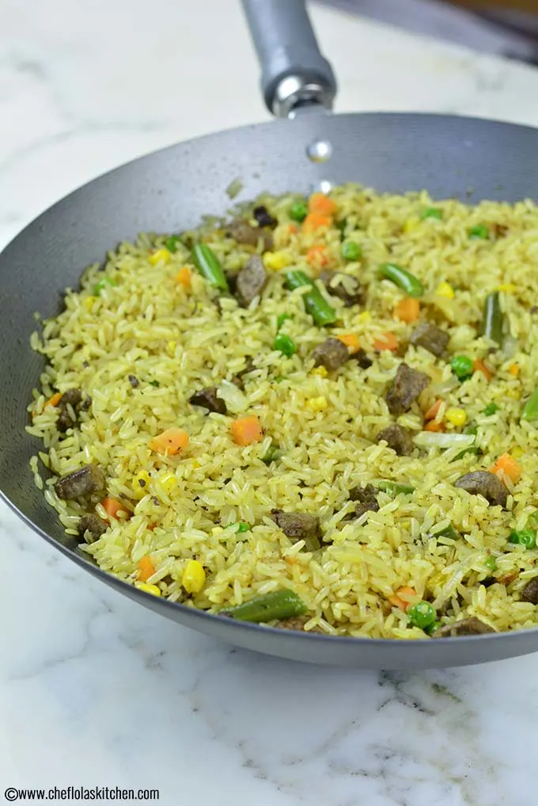
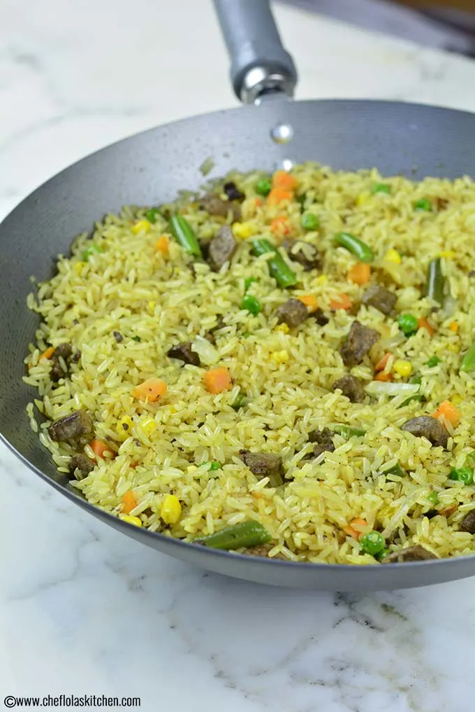

HOW TO MAKE FRIED RICE
Step 1: Boil The Rice or Steam Cook Them
Add 1/2 tsp salt and 1/2 tsp sunflower oil to the rice and boil it. Drain the water from boiled rice and allow it to cool by spreading it on a plate. You can also use cooked rice if you are in a jiffy.
Step 2: Saute All The Veggies
Heat a pan with 1/4 cup of oil on a moderate flame. Add ginger-garlic paste and fry till light brown. You can add some green chillies as per your palate preference. Add all the vegetables line onions, chopped spring onions, capsicums. Cook this mix of veggies and spices for some time by continuously stirring. Keep the sauteed vegetables aside.
Step 3: Mix Sauces in the Veggies And Cook With Rice For 3-5 Minutes
Take another pan and heat 1/4 cup of oil on a moderate flame. Add boiled rice and stir fry for 3 mins on sim flame. Now add all the sauteed vegetables to pan and mix them well. Add soya sauce, vinegar, tomato sauce, green chilli sauce, black pepper powder, salt and mix well. Keep stirring on mediumb flame till all the sauces dry out. Turn off the heat and transfer fried rice to a serving bowl.
Step 4: Garnish And Serve
Garnish it with some freshly chopped coriander leaves and serve with chilli paneer or manchurian. Make sure you try this recipe, rate it and let us know in the comments how it turned out to be.

 

Tips
- Do not completely cook rice in one go as they will be cooked properly in steps further.
- Adding the sauces after adding vegetables can spoil their colour and texture. Refrain from doing so.
- Toss the pan as much as possible while cooking instead of using a ladle. This will prevent the rice from breaking.